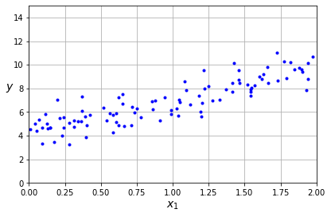
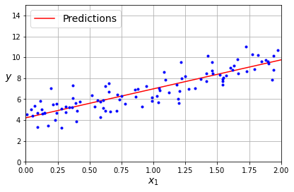

Section 2 — Training Linear Models & Support Vector Machines
Κανόνας πηγών: Το παρόν υλικό είναι απλή ελληνική επεξήγηση μόνο των ανεβασμένων αρχείων DAMA61 ΟΣΣ2, Géron Chapter 4/5, δύο notebooks και δύο απομαγνητοφωνήσεων. Οι τίτλοι και η ομαδοποίηση αποτελούν διδακτική ταξινόμηση της ίδιας ύλης. Δεν προστίθεται νέα θεωρία, νέο dataset ή πρωτότυπη άσκηση.
Ανάγνωση παραπομπών: Η «σελίδα PDF» είναι η θέση στο πραγματικό ανεβασμένο αρχείο. Το «κελί» στο .ipynb αριθμείται από 0, όπως βρίσκεται αποθηκευμένο στη σειρά cells. Οι απομαγνητοφωνήσεις δεν περιλαμβάνουν timestamps και τεκμηριώνονται με γραμμές.
Κώδικας: Παραθέτουμε μόνο πραγματικά αποσπάσματα notebook και εξηγούμε τη σύνδεσή τους με τα προηγούμενα κελιά. Δεν ισχυριζόμαστε νέα εκτέλεση. NOT EXECUTED (νέα εκτέλεση). Αποθηκευμένα outputs του πρωτοτύπου αναγνωρίζονται ρητά ως τέτοια.
Part 1 — Από τα δεδομένα στη γραμμική πρόβλεψη
Μάθημα 01 — Τι είναι η παλινδρόμηση και τι σημαίνει ότι ένα μοντέλο μαθαίνει
Προαπαιτούμενα από την υπάρχουσα ύλη: Κανένα μαθηματικό προαπαιτούμενο.
Από την πηγή — τι διδάσκεται
Η ανάλυση παλινδρόμησης, ή regression analysis, στοχεύει στην πρόβλεψη μιας άγνωστης τιμής, χρησιμοποιώντας άλλες γνωστές τιμές. Οι διαφάνειες ονομάζουν τις γνωστές μεταβλητές explanatory variables και την τιμή που θέλουμε να μάθουμε target. Η σύνδεση των δύο αποτυπώνεται με μια συνάρτηση. Το ζητούμενο της εκπαίδευσης δεν είναι να απομνημονεύσει κανείς έναν κατάλογο απαντήσεων, αλλά να βρει τη μαθηματική σχέση που περιγράφει τα διαθέσιμα δεδομένα.
Στην παρουσίαση διαχωρίζονται δύο στάδια: learning, όταν κατασκευάζεται η συνάρτηση από ήδη γνωστές εισόδους και εξόδους, και inference, όταν χρησιμοποιείται για να προβλέψει την άγνωστη έξοδο μιας νέας περίπτωσης. Η διάλεξη εξηγεί ότι σε πραγματικά δεδομένα μπορεί να υπάρχει θόρυβος και η προσαρμοσμένη γραμμή να μη διέρχεται από κάθε παρατήρηση.
Οπτική εξήγηση — πραγματικά σχήματα της πηγής

Αυθεντικό αποθηκευμένο διάγραμμα: 04_training_linear_models(1).ipynb — κελί 15 (αρίθμηση από το 0). Αναπαράγεται από το υπάρχον output του notebook· NOT EXECUTED εδώ.
Πώς να το διαβάσεις: Κοίτα πρώτα τα μπλε σημεία: δεν είναι όλα πάνω στην ίδια ευθεία, αλλά φανερώνουν μια συνολική αυξανόμενη τάση. Πρόκειται για το πραγματικό σύνολο του Géron, όχι για τον προφορικό πίνακα του εστιατορίου.
Απλή επεξήγηση της ίδιας έννοιας
Για να μη χαθείς στους όρους: «είσοδος» σημαίνει τα στοιχεία που διαθέτουμε, «έξοδος» σημαίνει τι παρατηρήθηκε ή τι θέλουμε να προβλέψουμε, «μοντέλο» σημαίνει ο κανόνας που μετατρέπει την είσοδο σε πρόβλεψη. Κατά την εκπαίδευση γνωρίζουμε και την είσοδο και την έξοδο, ώστε να μπορούμε να ελέγξουμε αν ο κανόνας είναι καλός. Στην εφαρμογή σε άγνωστη περίπτωση γνωρίζουμε την είσοδο και περιμένουμε από το μοντέλο την εκτίμηση.
Η λέξη feature, χαρακτηριστικό, αφορά κάθε μέρος της εισόδου. Ένα δείγμα μπορεί να περιέχει πολλά χαρακτηριστικά. Η διάλεξη τα οργανώνει σε διάνυσμα, δηλαδή μια ομαδοποιημένη ακολουθία αριθμών. Η ανάγκη να συγκρίνουμε προβλέψεις με γνωστές τιμές είναι η βάση των επόμενων μαθημάτων περί σφάλματος.
Καθοδηγούμενη εξήγηση — ακολουθούμε αργά την ίδια πηγή
Η διάλεξη ξεκινά από όσα γνωρίζουμε, όχι από όσα θέλουμε να μαντέψουμε. Στο παράδειγμα του εστιατορίου υπάρχουν καταγραφές για τις προηγούμενες ημέρες: καιρός και πραγματικός αριθμός πελατών. Η σχέση ανάμεσα σε αυτά είναι ακριβώς το άγνωστο που προσπαθούμε να μάθουμε. Όταν η σχέση έχει πλέον προσαρμοστεί στα παλιά δεδομένα, μπορούμε να της δώσουμε τον καιρό μιας άλλης ημέρας, για την οποία δεν γνωρίζουμε ακόμη την προσέλευση. Το πρώτο στάδιο είναι εκπαίδευση και το δεύτερο πρόβλεψη.
Η εξίσωση της διαφάνειας, «ύψιλον ίσον εφ του χι», δεν σου ζητά να ξέρεις κάποια ειδική συνάρτηση. Λέει ότι τα δεδομένα εισόδου, χι, συνδέονται με την τιμή-στόχο, ύψιλον, μέσω μιας σχέσης που αναζητούμε. Το καπελάκι στο ύψιλον ξεχωρίζει μια εκτίμηση από την ήδη μετρημένη πραγματική τιμή. Το παράδειγμα της διάλεξης είναι προφορικό και δεν δίνει αριθμητικές μετρήσεις: γι’ αυτό δεν υπολογίζουμε δικές μας τιμές πελατών.
Το βιβλίο και η διάλεξη προειδοποιούν για τον θόρυβο των πραγματικών δεδομένων. Αυτός είναι ο λόγος που αναζητούμε μια σχέση που περιγράφει την τάση των γνωστών παρατηρήσεων και δεν απαιτούμε να περνά υποχρεωτικά από κάθε σημείο.
Οι τύποι της πηγής και τι σημαίνουν
Προφορική ανάγνωση και επεξήγηση: Η σχέση της πηγής λέει: η τιμή ύψιλον περιγράφεται ως μια συνάρτηση του χι. Όταν βάζουμε καπελάκι πάνω στο ύψιλον, εννοούμε την τιμή που προβλέπουμε, όχι μια τιμή που ήδη μετρήσαμε.
Αριθμητικό παράδειγμα ή εφαρμογή — αποκλειστικά από την πηγή
Υπαρκτό παράδειγμα της διάλεξης: Ο διδάσκων εξετάζει το εστιατόριο. Για προηγούμενες ημέρες γνωρίζει θερμοκρασία, υγρασία, άνεμο και αριθμό πελατών. Από αυτές τις γνωστές ημέρες μαθαίνει σχέση και τη χρησιμοποιεί για πρόβλεψη πελατών σε νέα ημέρα. Δεν δίνονται αριθμητικά δεδομένα προς υπολογισμό.
Περιορισμοί και προσοχή
Η πηγή υπενθυμίζει ότι πραγματικές παρατηρήσεις περιλαμβάνουν θόρυβο. Δεν υπάρχει εδώ αριθμητικό λυμένο παράδειγμα του εστιατορίου· επομένως δεν προστίθενται υποθετικές τιμές.
Τι κρατώ από το υπάρχον μάθημα
Regression: βρίσκουμε σχέση από γνωστά παραδείγματα· learning σημαίνει εκπαίδευση, inference σημαίνει πρόβλεψη.
Μάθημα 02 — Γραμμική παλινδρόμηση: χαρακτηριστικά, βάρη και σταθερός όρος
Προαπαιτούμενα από την υπάρχουσα ύλη: Μάθημα 01.
Από την πηγή — τι διδάσκεται
Η γραμμική παλινδρόμηση αποτελεί ένα από τα απλούστερα μοντέλα του βιβλίου. Παίρνει τις τιμές των γνωστών χαρακτηριστικών και τις συνδυάζει με βάρη. Τα βάρη είναι παράμετροι του μοντέλου: άγνωστοι αριθμοί πριν από την εκπαίδευση, οι οποίοι προσδιορίζονται μέσα από τα δεδομένα. Η ΟΣΣ2 γράφει τη γραμμική σχέση χρησιμοποιώντας το σύμβολο w, ενώ το βιβλίο χρησιμοποιεί επίσης το θ. Πρόκειται για διαφορετικό συμβολισμό της ίδιας βασικής έννοιας.
Ο όρος w μηδέν ονομάζεται bias ή intercept και είναι σταθερός: δεν πολλαπλασιάζεται με ένα από τα συνηθισμένα χαρακτηριστικά. Η διάλεξη επιμένει ότι επιτρέπει στο μοντέλο να ξεκινά από μια τιμή ακόμη και όταν τα υπόλοιπα χαρακτηριστικά είναι μηδέν. Το σύνολο των βαρών μπορεί να γραφτεί ως διάνυσμα· όταν υπάρχουν πολλά δεδομένα, τα χαρακτηριστικά συγκεντρώνονται σε πίνακα.
Οπτική εξήγηση — πραγματικά σχήματα της πηγής

Αυθεντικό αποθηκευμένο διάγραμμα: 04_training_linear_models(1).ipynb — κελί 19 (αρίθμηση από το 0). Αναπαράγεται από το υπάρχον output του notebook· NOT EXECUTED εδώ.
Πώς να το διαβάσεις: Άρχισε από ένα μπλε σημείο και δες πού βρίσκεται η κόκκινη ευθεία στην ίδια τιμή x₁. Η κόκκινη τιμή είναι η πρόβλεψη. Το σχήμα συνδέεται με τους συντελεστές της γραμμικής παλινδρόμησης.
Απλή επεξήγηση της ίδιας έννοιας
Κάθε σύμβολο εξυπηρετεί έναν συγκεκριμένο ρόλο. Το χ με έναν δείκτη είναι ένα χαρακτηριστικό, το w με τον ίδιο δείκτη είναι ο συντελεστής του και το d δείχνει πόσα χαρακτηριστικά υπάρχουν. Το καπελάκι πάνω από το ύψιλον δηλώνει την πρόβλεψη. Η μαθηματική συνάρτηση παραμένει γραμμική ως προς τα βάρη, ακόμη και όταν υπάρχουν πολλά χαρακτηριστικά.
Η διάλεξη προτείνει πρώτα να παρατηρούμε το σχήμα των δεδομένων. Αν υπάρχει περίπου γραμμική τάση, το γραμμικό μοντέλο είναι κατάλληλη αφετηρία. Η επιλογή μοντέλου είναι ξεχωριστή από τη διαδικασία εκπαίδευσης: πρώτα επιλέγουμε τη μορφή και μετά βρίσκουμε τις τιμές των βαρών.
Καθοδηγούμενη εξήγηση — ακολουθούμε αργά την ίδια πηγή
Στον τύπο της γραμμικής παλινδρόμησης υπάρχουν δύο είδη αριθμών. Τα χι είναι όσα παρατηρούμε και τα w είναι όσα δεν γνωρίζουμε πριν από την εκπαίδευση. Ο δείκτης δίπλα στο χι και στο w δείχνει ότι μιλάμε για το ίδιο χαρακτηριστικό, όχι για ύψωση σε δύναμη. Κάθε ζεύγος δίνει ένα γινόμενο. Η πρόβλεψη προκύπτει αν προσθέσουμε όλα αυτά τα γινόμενα και τον σταθερό όρο w μηδέν.
Ο σταθερός όρος εξηγείται ιδιαίτερα στη διάλεξη: είναι η τιμή εκκίνησης όταν οι υπόλοιπες είσοδοι είναι μηδέν. Ο Géron χρησιμοποιεί θ για τις ίδιες παραμέτρους που οι διαφάνειες γράφουν w. Δεν πρόκειται για νέο μοντέλο. Ακόμη και όταν το βιβλίο γράφει τη σχέση με διανύσματα και εσωτερικό γινόμενο, οι πράξεις παραμένουν πολλαπλασιασμοί των αντίστοιχων θέσεων και πρόσθεση.
Στο πραγματικό notebook, τα intercept_ και coef_ δείχνουν τα δύο τμήματα που ήδη γνωρίζουμε από τον τύπο: σταθερό όρο και υπόλοιπα βάρη. Το fit βρίσκει τα βάρη με τα γνωστά δεδομένα, ενώ το predict χρησιμοποιεί το αποτέλεσμα χωρίς να εκπαιδεύει ξανά το μοντέλο.
Οι τύποι της πηγής και τι σημαίνουν
Προφορική ανάγνωση και επεξήγηση: Η πρόβλεψη ισούται με τον σταθερό όρο, συν το πρώτο βάρος επί το πρώτο χαρακτηριστικό, και συνεχίζουμε αντίστοιχα μέχρι το τελευταίο χαρακτηριστικό. Το γράμμα ντι είναι ο αριθμός χαρακτηριστικών.
Αριθμητικό παράδειγμα ή εφαρμογή — αποκλειστικά από την πηγή
Υπαρκτή εφαρμογή της διάλεξης: Με τα χαρακτηριστικά θερμοκρασία, υγρασία και άνεμο, κάθε χαρακτηριστικό αποκτά έναν συντελεστή. Η ίδια η διάλεξη δεν δίνει αριθμητικά βάρη γι’ αυτό το συγκεκριμένο παράδειγμα. Η επόμενη ενότητα χρησιμοποιεί το αριθμητικό παράδειγμα 4 + 3x με θόρυβο του Géron.
Βασική Python από το πραγματικό notebook
Πριν από τον κώδικα: Η διαδικασία και η σειρά των εντολών έχουν οριστεί από τα συγκεκριμένα κελιά του δοσμένου notebook. Δεν δημιουργούμε νέα υλοποίηση.
Ακριβές απόσπασμα του παρεχόμενου 04_training_linear_models(1).ipynb, κελί 20 (αρίθμηση από 0):
from sklearn.linear_model import LinearRegression
lin_reg = LinearRegression()
lin_reg.fit(X, y)
lin_reg.intercept_, lin_reg.coef_Ακριβές απόσπασμα του παρεχόμενου 04_training_linear_models(1).ipynb, κελί 21 (αρίθμηση από 0):
lin_reg.predict(X_new)Επεξήγηση των πραγματικών βημάτων: Το κελί 20 εισάγει LinearRegression, δημιουργεί το μοντέλο, καλεί fit(X, y) και διαβάζει intercept_ και coef_. Το κελί 21 καλεί predict(X_new) για τις εισόδους που είχαν δημιουργηθεί προηγουμένως στο notebook. Η fit εκπαιδεύει· η predict δεν εκπαιδεύει ξανά, κάνει πρόβλεψη. Τα X, y, X_new έχουν οριστεί σε προηγούμενα κελιά, επομένως ο κώδικας διαβάζεται μέσα στο πλαίσιο του αρχικού notebook.
Εκτέλεση: NOT EXECUTED εδώ· οποιαδήποτε αριθμητική έξοδος παραπάνω είναι αποθηκευμένη στο πρωτότυπο notebook.
Αργή ανάγνωση του γραμμικού τύπου
Η εξίσωση των σημειώσεων διαβάζεται από αριστερά προς τα δεξιά: ξεκινώ από τη σταθερή τιμή , προσθέτω το γινόμενο του πρώτου βάρους με το πρώτο χαρακτηριστικό και συνεχίζω με τον ίδιο τρόπο μέχρι το -οστό χαρακτηριστικό. Ο δείκτης δεν είναι εκθέτης: σημαίνει «δεύτερο χαρακτηριστικό», ενώ θα σήμαινε «τετράγωνο του ίδιου αριθμού». Δεν πρέπει να μπερδέψουμε αυτές τις γραφές, γιατί στο μάθημα της Polynomial Regression εμφανίζονται και οι δύο.
Όταν η πηγή γράφει , το δηλώνει τον ανάστροφο του διανύσματος βαρών και το γινόμενο υπολογίζει το άθροισμα των γινομένων βάρους–χαρακτηριστικού. Το εμφανίζεται ξεχωριστά ή συμπεριλαμβάνεται μέσω μιας πρόσθετης σταθερής εισόδου , όπως δείχνει ο Géron.
Διαβάζουμε τον πραγματικό κώδικα γραμμή προς γραμμή
Οι παρακάτω παρατηρήσεις εξηγούν μόνο τις εντολές που υπάρχουν ήδη στα παρατιθέμενα αποσπάσματα. Δεν αποτελούν νέο πρόγραμμα. Για την ακριβή προέλευση κάθε block χρησιμοποιούμε τις ήδη σημειωμένες παραπομπές notebook/κελιού του μαθήματος. Νέα εκτέλεση: NOT EXECUTED.
Απόσπασμα 1, στη σειρά της πηγής: - from sklearn.linear_model import LinearRegression — Φέρνει στον κώδικα τη βιβλιοθήκη, τη συνάρτηση ή την κλάση που χρησιμοποιείται ήδη σε αυτό το δοσμένο παράδειγμα. - lin_reg = LinearRegression() — Δημιουργεί το γραμμικό μοντέλο που θα εκπαιδευτεί με τα δεδομένα της προηγούμενης εντολής. - lin_reg.fit(X, y) — Εκπαιδεύει το ήδη ορισμένο μοντέλο στα συγκεκριμένα χαρακτηριστικά και τις γνωστές εξόδους. - lin_reg.intercept_, lin_reg.coef_ — Διαβάζει τον σταθερό όρο και τα βάρη που έμαθε το μοντέλο, χωρίς νέα εκπαίδευση. Απόσπασμα 2, στη σειρά της πηγής: - lin_reg.predict(X_new) — Ζητά πρόβλεψη από το ήδη εκπαιδευμένο μοντέλο για τις τιμές εισόδου του βιβλίου.
Περιορισμοί και προσοχή
Το γραμμικό μοντέλο προϋποθέτει ότι η επιλεγμένη γραμμική μορφή μπορεί να περιγράψει επαρκώς την τάση που μας ενδιαφέρει.
Τι κρατώ από το υπάρχον μάθημα
Features είναι τα γνωστά στοιχεία· weights είναι όσα βρίσκει η εκπαίδευση· intercept είναι ο σταθερός όρος.
Μάθημα 03 — Μέτρηση σφάλματος, ελάχιστα τετράγωνα και Normal Equation
Προαπαιτούμενα από την υπάρχουσα ύλη: Μαθήματα 01–02· βασική ανάγνωση πινάκων.
Από την πηγή — τι διδάσκεται
Για να εκπαιδεύσουμε ένα μοντέλο χρειάζεται ένας τρόπος να κρίνουμε πόσο απέχουν οι προβλέψεις από τις πραγματικές τιμές. Η ΟΣΣ2 χρησιμοποιεί άθροισμα τετραγωνικών σφαλμάτων, SSE. Σε κάθε παράδειγμα αφαιρούμε την πραγματική τιμή από την πρόβλεψη, υψώνουμε το αποτέλεσμα στο τετράγωνο και προσθέτουμε τις διαφορές από όλα τα παραδείγματα. Το τετράγωνο εμποδίζει θετικά και αρνητικά σφάλματα να αλληλοαναιρούνται. Ο συντελεστής ένα δεύτερο διευκολύνει τη μετέπειτα παραγώγιση.
Ο Géron χρησιμοποιεί επίσης το MSE, το μέσο τετραγωνικό σφάλμα, που περιλαμβάνει διαίρεση με το πλήθος των παραδειγμάτων. Η μορφή SSE της ΟΣΣ2 δεν πρέπει να συγχέεται τυπικά με την MSE του βιβλίου. Και οι δύο οδηγούν στη μαθηματική ιδέα της ελαχιστοποίησης σφάλματος. Η Normal Equation παρέχει άμεσο υπολογισμό βαρών. Εμφανίζονται η ανάστροφη του πίνακα, ο αντίστροφός του και το γινόμενο πινάκων. Το βιβλίο εξηγεί γιατί το LinearRegression βασίζεται σε μέθοδο ελαχίστων τετραγώνων και αναφέρει ψευδοαντίστροφο και SVD.
Οπτική εξήγηση — πραγματικά σχήματα της πηγής
Αυθεντικό αποθηκευμένο διάγραμμα: 04_training_linear_models(1).ipynb — κελί 19 (αρίθμηση από το 0). Αναπαράγεται από το υπάρχον output του notebook· NOT EXECUTED εδώ.
Πώς να το διαβάσεις: Σκέψου την κατακόρυφη απόσταση κάθε μπλε σημείου από την κόκκινη ευθεία. Η ενότητα του MSE στο βιβλίο εξηγεί ότι τετραγωνίζουμε αυτές τις αποκλίσεις και παίρνουμε τον μέσο τους. Το σχήμα δεν απεικονίζει από μόνο του τη Normal Equation.
Απλή επεξήγηση της ίδιας έννοιας
Το μικρό καπέλο στην πρόβλεψη μας θυμίζει ότι δεν είναι απαραίτητα ίση με αυτό που είχαμε μετρήσει. Το Ν ή το m, ανάλογα με τον συμβολισμό, είναι πόσα παραδείγματα υπάρχουν. Το Χ είναι ο πίνακας που περιλαμβάνει τα χαρακτηριστικά, η στήλη Υ είναι οι γνωστές σωστές έξοδοι, και το w ή θ περιέχει τους συντελεστές. Το Χ ανάστροφο σημαίνει ότι αλλάζουμε θέσεις γραμμών και στηλών, δεν σημαίνει διαίρεση. Η ύπαρξη αντιστρόφου για τη Normal Equation απαιτεί κατάλληλο πίνακα· το βιβλίο δίνει τον ψευδοαντίστροφο ως πιο ανθεκτική λύση σε οριακές περιπτώσεις.
Καθοδηγούμενη εξήγηση — ακολουθούμε αργά την ίδια πηγή
Το μάθημα αυτό ενώνει δύο ερωτήσεις: πόσο λάθος είναι οι προβλέψεις και πώς βρίσκουμε βάρη που το μειώνουν. Η διαφάνεια ορίζει το SSE: για κάθε παλιό δείγμα αφαιρούμε την πραγματική τιμή από την πρόβλεψη, υψώνουμε τη διαφορά στο τετράγωνο και προσθέτουμε. Το ένα δεύτερο χρησιμοποιείται στη συγκεκριμένη διατύπωση της ΟΣΣ2. Στο MSE του Géron διαιρούμε αντίστοιχα το άθροισμα τετραγώνων με το πλήθος δειγμάτων. Μην μπερδεύεις το άθροισμα SSE με τον μέσο MSE.
Η Normal Equation γράφει απευθείας τα εκτιμώμενα βάρη με πίνακες. Το Χ περιέχει τις εισόδους, το Υ τις γνωστές εξόδους, το Τ δηλώνει μεταφορά και το σύμβολο μείον ένα δηλώνει αντίστροφο όταν αυτός υπάρχει. Το βιβλίο δείχνει και την ψευδοαντίστροφη λύση όταν η απλή αντιστροφή δεν είναι κατάλληλη. Δεν χρειάζεται να υποκριθούμε ότι έχουμε ολοκληρωμένο μάθημα γραμμικής άλγεβρας: εδώ διαβάζουμε τον υπάρχοντα υπολογισμό.
Στο πραγματικό παράδειγμα, η σχέση που δημιούργησε τα δεδομένα είναι τέσσερα συν τρία επί χι, με προσθήκη θορύβου. Η εκπαίδευση βρίσκει περίπου 4.21509616 και 2.77011339. Για την είσοδο δύο, το γινόμενο είναι 2.77011339 επί δύο, δηλαδή 5.54022678· προσθέτουμε τον σταθερό όρο 4.21509616 και παίρνουμε περίπου 9.75532294, το οποίο η πηγή εμφανίζει με την ακρίβεια των πραγματικών βαρών ως 9.75532293. Αυτοί είναι οι δοσμένοι αριθμοί, όχι νέα άσκηση.
Οι τύποι της πηγής και τι σημαίνουν
Προφορική ανάγνωση και επεξήγηση: Πρώτος τύπος: το σφάλμα είναι το μισό από το άθροισμα των τετραγώνων των διαφορών πρόβλεψης και γνωστής τιμής. Δεύτερος τύπος: το μέσο τετραγωνικό σφάλμα διαιρεί αυτό το άθροισμα με το πλήθος των δειγμάτων. Τρίτος τύπος: η λύση των βαρών είναι ο αντίστροφος του Χ ανάστροφο επί Χ, επί Χ ανάστροφο, επί το διάνυσμα των στόχων.
Αριθμητικό παράδειγμα ή εφαρμογή — αποκλειστικά από την πηγή
Αυθεντικό αριθμητικό παράδειγμα του Géron: Τα δεδομένα παράγονται από y = 4 + 3 * X + np.random.randn(m, 1) με m=100 και seed 42. Η εκτίμηση της πηγής είναι theta_best = [[4.21509616], [2.77011339]]. Για x=0 δίνει 4.21509616 και για x=2 δίνει 4.21509616 + 2 × 2.77011339 = 9.75532294 (το αποθηκευμένο output της πηγής γράφει 9.75532293 λόγω πλήρους μη στρογγυλοποιημένης ακρίβειας). Οι αποκλίσεις από 4 και 3 οφείλονται στον προστιθέμενο θόρυβο.
Βασική Python από το πραγματικό notebook
Πριν από τον κώδικα: Η διαδικασία και η σειρά των εντολών έχουν οριστεί από τα συγκεκριμένα κελιά του δοσμένου notebook. Δεν δημιουργούμε νέα υλοποίηση.
Ακριβές απόσπασμα του παρεχόμενου 04_training_linear_models(1).ipynb, κελί 14 (αρίθμηση από 0):
import numpy as np
np.random.seed(42) # to make this code example reproducible
m = 100 # number of instances
X = 2 * np.random.rand(m, 1) # column vector
y = 4 + 3 * X + np.random.randn(m, 1) # column vectorΑκριβές απόσπασμα του παρεχόμενου 04_training_linear_models(1).ipynb, κελί 16 (αρίθμηση από 0):
from sklearn.preprocessing import add_dummy_feature
X_b = add_dummy_feature(X) # add x0 = 1 to each instance
theta_best = np.linalg.inv(X_b.T @ X_b) @ X_b.T @ yΑκριβές απόσπασμα του παρεχόμενου 04_training_linear_models(1).ipynb, κελί 17 (αρίθμηση από 0):
theta_bestΑκριβές απόσπασμα του παρεχόμενου 04_training_linear_models(1).ipynb, κελί 18 (αρίθμηση από 0):
X_new = np.array([[0], [2]])
X_new_b = add_dummy_feature(X_new) # add x0 = 1 to each instance
y_predict = X_new_b @ theta_best
y_predictΕπεξήγηση των πραγματικών βημάτων: Κελί 14: np.random.seed(42) κρατά αναπαραγώγιμα τα τυχαία δεδομένα, X δημιουργεί 100 εισόδους, y προσθέτει γραμμική τάση και θόρυβο. Κελί 16: add_dummy_feature(X) βάζει τη σταθερή στήλη 1 και np.linalg.inv(...) εφαρμόζει τη Normal Equation με τον τελεστή @ πολλαπλασιασμού πινάκων. Κελί 17 δείχνει τα βάρη. Κελί 18 δημιουργεί τις νέες εισόδους 0 και 2 και τις πολλαπλασιάζει με τα βάρη για τις προβλέψεις.
Εκτέλεση: NOT EXECUTED εδώ· οποιαδήποτε αριθμητική έξοδος παραπάνω είναι αποθηκευμένη στο πρωτότυπο notebook.
Πράξεις του αυθεντικού αριθμητικού παραδείγματος, χωρίς προσθήκη νέων δεδομένων
Ο Géron κατασκευάζει τα δεδομένα με σχέση . Ο θόρυβος εξηγεί γιατί οι τιμές που βρίσκει το μοντέλο δεν ταυτίζονται ακριβώς με το 4 και το 3. Η πηγή εμφανίζει και .
Για την υπάρχουσα είσοδο , ο δεύτερος όρος μηδενίζεται, οπότε η πρόβλεψη ισούται με τον σταθερό όρο. Για την υπάρχουσα είσοδο :
Η διαφορά ανάμεσα στα τελευταία δεκαδικά της απλής γραπτής πράξης και της αποθηκευμένης εξόδου οφείλεται στο ότι τα εμφανιζόμενα βάρη είναι ήδη στρογγυλοποιημένα. Η πηγή έχει πρόσβαση στην πλήρη ακρίβεια των βαρών. Πηγή: Géron, Chapter 4 — The Normal Equation — σελ. PDF 3–5· N4, κελιά 14–18.
Διαβάζουμε τον πραγματικό κώδικα γραμμή προς γραμμή
Οι παρακάτω παρατηρήσεις εξηγούν μόνο τις εντολές που υπάρχουν ήδη στα παρατιθέμενα αποσπάσματα. Δεν αποτελούν νέο πρόγραμμα. Για την ακριβή προέλευση κάθε block χρησιμοποιούμε τις ήδη σημειωμένες παραπομπές notebook/κελιού του μαθήματος. Νέα εκτέλεση: NOT EXECUTED.
Απόσπασμα 1, στη σειρά της πηγής: - import numpy as np — Φέρνει στον κώδικα τη βιβλιοθήκη, τη συνάρτηση ή την κλάση που χρησιμοποιείται ήδη σε αυτό το δοσμένο παράδειγμα. - np.random.seed(42) # to make this code example reproducible — Ορίζει τη σταθερή αρχική κατάσταση τυχαιότητας για αναπαραγωγιμότητα του συγκεκριμένου παραδείγματος. - m = 100 # number of instances — Καταγράφει το πλήθος των δειγμάτων που θα χρησιμοποιηθούν στους υπολογισμούς. - X = 2 * np.random.rand(m, 1) # column vector — Δημιουργεί τις συγκεκριμένες τυχαίες τιμές εισόδου ακριβώς όπως τις ορίζει η πηγή. - y = 4 + 3 * X + np.random.randn(m, 1) # column vector — Ορίζει τις πραγματικές εξόδους αυτού του παραδείγματος από την υπάρχουσα σχέση, μαζί με τον θόρυβο της πηγής. Απόσπασμα 2, στη σειρά της πηγής: - from sklearn.preprocessing import add_dummy_feature — Φέρνει στον κώδικα τη βιβλιοθήκη, τη συνάρτηση ή την κλάση που χρησιμοποιείται ήδη σε αυτό το δοσμένο παράδειγμα. - X_b = add_dummy_feature(X) # add x0 = 1 to each instance — Προσθέτει τη σταθερή στήλη μονάδων, ώστε ο σταθερός όρος της γραμμικής σχέσης να περιλαμβάνεται στους υπολογισμούς. - theta_best = np.linalg.inv(X_b.T @ X_b) @ X_b.T @ y — Εφαρμόζει τον αυθεντικό τύπο Normal Equation με αντίστροφο και πολλαπλασιασμούς πινάκων. Απόσπασμα 3, στη σειρά της πηγής: - theta_best — Ζητά να εμφανιστεί η τιμή που έχει ήδη υπολογιστεί από τα προηγούμενα βήματα του notebook. Απόσπασμα 4, στη σειρά της πηγής: - X_new = np.array([[0], [2]]) — Συγκεντρώνει τις συγκεκριμένες τιμές της πηγής σε πίνακα NumPy. - X_new_b = add_dummy_feature(X_new) # add x0 = 1 to each instance — Προσθέτει τη σταθερή στήλη μονάδων, ώστε ο σταθερός όρος της γραμμικής σχέσης να περιλαμβάνεται στους υπολογισμούς. - y_predict = X_new_b @ theta_best — Διατηρεί τη συγκεκριμένη εντολή του αρχικού notebook ως μέρος του υπάρχοντος υπολογισμού, χωρίς αλλαγή στον αλγόριθμο. - y_predict — Ζητά να εμφανιστεί η τιμή που έχει ήδη υπολογιστεί από τα προηγούμενα βήματα του notebook.
Περιορισμοί και προσοχή
Η Normal Equation μπορεί να έχει πρόβλημα όταν δεν υπάρχει ο απαιτούμενος αντίστροφος και γίνεται υπολογιστικά ακριβή με πάρα πολλά χαρακτηριστικά. Το βιβλίο συζητά την SVD ως εναλλακτική. Οι μαθηματικές εισαγωγές περί πινάκων που προτείνει ο συγγραφέας δεν περιλαμβάνονται στα συνημμένα.
Τι κρατώ από το υπάρχον μάθημα
Το error χρειάζεται για να επιλεγούν βάρη· SSE και MSE έχουν διαφορετικό κανονικοποιητικό παράγοντα· Normal Equation δίνει άμεση λύση όταν εφαρμόζεται.